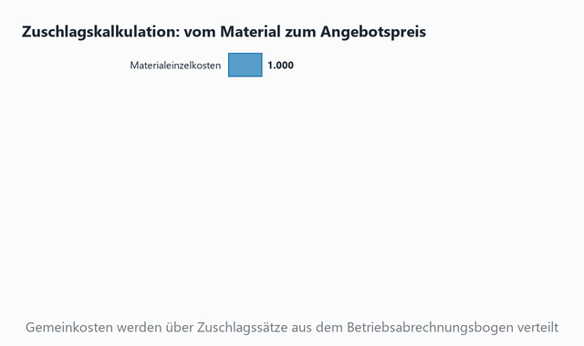
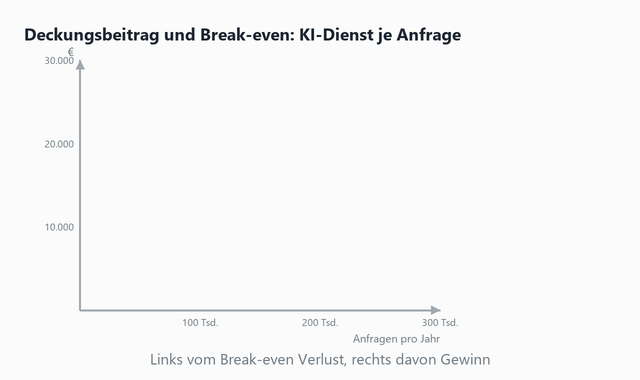
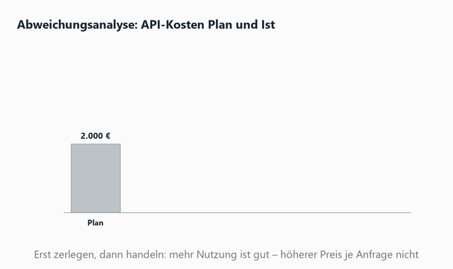
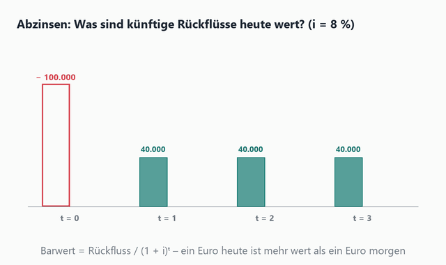
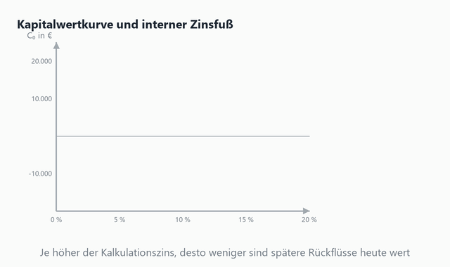
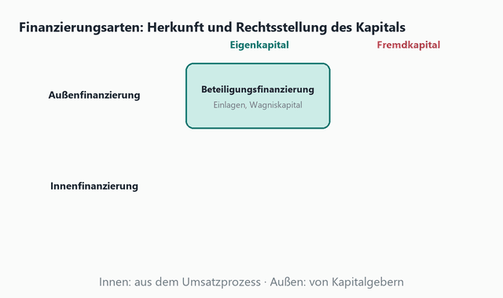

Ökonomische Aspekte: Controlling, Kostenrechnung, Investition, Finanzierung, Nachhaltigkeit
Ein KI-Projekt muss sich rechnen – und finanziert werden. In diesem Modul lernen Sie die Grundzüge des Controllings und der Kosten- und Leistungsrechnung, kalkulieren Preise, bestimmen Deckungsbeiträge und Break-even, analysieren Budgetabweichungen, beurteilen Investitionen statisch und dynamisch (Kapitalwert, interner Zinsfuß), bewerten Nachhaltigkeit und Energiebedarf von KI und lernen die wichtigsten Finanzierungsarten und Kennzahlen kennen.
Controlling: Aufgaben, operativ und strategisch, Kennzahlensysteme
Der Navigator im Rallyeauto fährt nicht selbst, aber er sagt dem Fahrer, wo er ist, was als Nächstes kommt und wann er bremsen muss. So unterstützt das Controlling die Unternehmensführung.
Controlling koordiniert Planung, Steuerung und Kontrolle und versorgt die Führung mit Informationen. Aufgaben: Ziele und Pläne aufstellen, Budgets, Soll-Ist-Vergleiche, Abweichungsanalysen, Berichte, Kennzahlen, Frühwarnung.
| operatives Controlling | strategisches Controlling | |
|---|---|---|
| Horizont | bis 1 Jahr | 3–5 Jahre und mehr |
| Frage | Machen wir die Dinge richtig? (Effizienz) | Machen wir die richtigen Dinge? (Effektivität) |
| Größen | Kosten, Erlöse, Gewinn, Liquidität | Erfolgspotenziale, Marktposition, Kompetenzen |
| Werkzeuge | Budget, Kostenrechnung, Abweichungsanalyse | SWOT, Portfolio, Balanced Scorecard, Szenarien |
Kennzahlensysteme verknüpfen Kennzahlen logisch: das DuPont-System (ROI = Umsatzrentabilität × Kapitalumschlag) oder die Balanced Scorecard mit vier Perspektiven (Finanzen, Kunden, Prozesse, Lernen und Entwicklung). KI hilft im Controlling bei Prognosen (Absatz, Liquidität), automatisierten Berichten und der Erkennung von Auffälligkeiten.
Controlling liefert der Führung Planung, Kennzahlen und Abweichungen – operativ für Effizienz, strategisch für die richtige Richtung.
Kosten- und Leistungsrechnung: Auszahlung, Ausgabe, Aufwand, Kosten
| Begriffspaar | Bezug | Beispiel |
|---|---|---|
| Auszahlung / Einzahlung | Abfluss bzw. Zufluss von Bargeld und Bankguthaben | Überweisung an den Cloud-Anbieter |
| Ausgabe / Einnahme | Geldvermögen inkl. Forderungen und Verbindlichkeiten | Rechnung erhalten, noch nicht bezahlt |
| Aufwand / Ertrag | Werteverbrauch bzw. -zuwachs in der Finanzbuchhaltung (Gewinn- und Verlustrechnung) | Abschreibung eines Servers |
| Kosten / Leistung | betrieblich bedingter, bewerteter Güterverbrauch bzw. betriebliches Ergebnis | Gehälter des Data-Teams |
Abgrenzung: Neutraler Aufwand ist kein Kostenbestandteil (betriebsfremd wie eine Spende, periodenfremd wie eine Steuernachzahlung, außerordentlich wie ein Brandschaden). Zweckaufwand = Grundkosten. Kalkulatorische Kosten: Anderskosten (anders bewertet, z. B. kalkulatorische Abschreibung auf Wiederbeschaffungswert) und Zusatzkosten (ohne Aufwand, z. B. kalkulatorischer Unternehmerlohn, kalkulatorische Eigenkapitalzinsen).
Kosten = betrieblicher, bewerteter Verbrauch. Nicht jeder Aufwand ist Kosten, und es gibt Kosten ohne Aufwand.
Der Kauf eines Servers ist eine Auszahlung, aber im Kaufjahr nicht vollständig Aufwand – er wird über die Nutzungsdauer abgeschrieben.
Kostenartenrechnung: Einzel- und Gemeinkosten, fix und variabel
| Einteilung | Bedeutung | KI-Beispiel |
|---|---|---|
| Einzelkosten | einem Produkt oder Auftrag direkt zurechenbar | API-Kosten für einen bestimmten Kundenauftrag |
| Gemeinkosten | nur über Schlüssel verteilbar | Plattform, Rechenzentrum, Verwaltung |
| fixe Kosten | unabhängig von der Menge | Lizenz-Grundgebühr, Gehälter, Miete |
| variable Kosten | steigen mit der Menge | Kosten je Token, je Anfrage, je GPU-Stunde |
| Mischkosten | fixer Sockel plus variabler Teil | Cloud-Tarif mit Grundgebühr und Nutzungspreis |
Die Kostenartenrechnung beantwortet: Welche Kosten sind angefallen? Typische Kostenarten: Personal, Material, Abschreibungen, Mieten, Fremdleistungen, Energie, Zinsen. Bei KI wachsen Fremdleistungen (Cloud, API) und Energie.
Einzel- oder Gemeinkosten fragt nach der Zurechenbarkeit, fix oder variabel nach der Abhängigkeit von der Menge.
Kostenstellenrechnung und Betriebsabrechnungsbogen
Die Kostenstellenrechnung beantwortet: Wo sind die Kosten angefallen? Gemeinkosten werden im Betriebsabrechnungsbogen (BAB) mit Schlüsseln (Fläche, Köpfe, Stunden, Rechenzeit) auf Kostenstellen verteilt. Daraus ergeben sich Zuschlagssätze für die Kalkulation.
| Kostenstelle | Gemeinkosten | Zuschlagsbasis | Basis | Zuschlagssatz |
|---|---|---|---|---|
| Material | 10.000 € | Materialeinzelkosten | 100.000 € | 10 % |
| Fertigung / Entwicklung | 72.000 € | Fertigungslöhne | 60.000 € | 120 % |
| Verwaltung und Vertrieb | 36.300 € | Herstellkosten | 242.000 € | 15 % |
Herstellkosten = 100.000 + 10.000 + 60.000 + 72.000 = 242.000 €. Verursachungsgerechte Schlüssel sind wichtig: Wer KI-Rechenzeit nach Köpfen verteilt, belastet Abteilungen falsch – besser nach tatsächlicher Nutzung (Showback/Chargeback).
BAB: Gemeinkosten auf Kostenstellen verteilen, Zuschlagssätze = Gemeinkosten / Zuschlagsbasis.
Kostenträgerrechnung und Kalkulation

Die Kostenträgerrechnung beantwortet: Wofür sind die Kosten angefallen? Die Zuschlagskalkulation verteilt Gemeinkosten mit den Sätzen aus dem BAB. Für Dienstleistungen wie KI-Beratung rechnet man mit Stundensätzen:
Personalkosten 75.000 € / 1.500 produktive Stunden = 50 €/h · + 60 % Gemeinkosten = 80 €/h · + 15 % Gewinn = 92 €/h
Weitere Verfahren: Divisionskalkulation (Einproduktbetrieb: Gesamtkosten / Menge), Maschinen- bzw. GPU-Stundensatzrechnung, Prozesskostenrechnung (Gemeinkosten nach Aktivitäten).
Einzelkosten + Gemeinkostenzuschläge = Selbstkosten; + Gewinn = Angebotspreis (vor Skonto und Rabatt).
Deckungsbeitragsrechnung und Break-even

Kurzfristige Preisuntergrenze = variable Stückkosten (Fixkosten fallen ohnehin an); langfristige = Selbstkosten. Die Deckungsbeitragsrechnung hilft auch bei der Frage, welches Produkt gefördert oder eingestellt wird.
Break-even = Fixkosten / Deckungsbeitrag je Stück. Jeder Deckungsbeitrag hilft zuerst, die Fixkosten zu decken.
Budgetierung und Abweichungsanalyse

Ein Budget ist ein verbindlicher Plan in Geld für eine Periode und einen Verantwortungsbereich. Ansätze: fortschreibend (Vorjahr ± x %), Zero-Base-Budgeting (jede Position neu begründen), flexibel (Sollkosten je nach Ist-Menge). Abweichungen werden analysiert, erklärt und mit Maßnahmen versehen.
Abweichungen zerlegen: Mehr Menge kann gewollt sein (Erfolg), ein höherer Preis je Einheit ist ein Steuerungsthema.
Branchenspezifika in der Abwägung
| Branche | Typische KI-Nutzen | Besonderheiten in der Abwägung |
|---|---|---|
| Industrie | Qualitätsprüfung, vorausschauende Wartung, Planung | hohe Investitionen, lange Nutzungsdauer, Sicherheit, Maschinenverordnung, KI in Produkten (Anhang I) |
| Handel | Absatzprognose, Preise, Empfehlungen, Kundenservice | geringe Margen, hohe Mengen, Verbraucherschutz |
| Dienstleistung | Dokumente, Wissen, Assistenz | Personalkosten dominieren, Qualität und Haftung |
| Gesundheit | Diagnoseunterstützung, Dokumentation | Medizinprodukterecht, Gesundheitsdaten (Art. 9 DSGVO), Hochrisiko |
| Finanzen und Versicherungen | Betrugserkennung, Kreditwürdigkeit, Schadenbearbeitung | Bankenaufsicht, Hochrisiko (Kredit, Lebens- und Krankenversicherung), Erklärbarkeit |
| Öffentlicher Sektor | Anträge, Bürgerservice | Vergaberecht, Haushaltsrecht, Grundrechte-Folgenabschätzung, Transparenz |
Gleiche Technik, andere Rechnung: Margen, Regulierung, Haftung und Investitionszyklen der Branche verändern Nutzen, Kosten und Risiken.
Statische Investitionsrechnung: Kosten-, Gewinn-, Rentabilitätsvergleich, Amortisation
| Kostenvergleich (Zins 8 %) | Anlage A | Anlage B |
|---|---|---|
| Investition, Nutzungsdauer 5 Jahre | 100.000 € | 60.000 € |
| Abschreibung je Jahr | 20.000 € | 12.000 € |
| kalkulatorische Zinsen (8 % auf I/2) | 4.000 € | 2.400 € |
| Betriebskosten | 30.000 € | 45.000 € |
| Kosten je Jahr | 54.000 € | 59.400 € |
Kostenvergleich bei gleichem Nutzen, Gewinnvergleich bei unterschiedlichen Erlösen, Rentabilität z. B. 15.000 € Gewinn / 50.000 € gebundenes Kapital = 30 %, Amortisation (Modul 13). Grenze: Statische Verfahren betrachten eine Durchschnittsperiode und ignorieren den Zeitpunkt der Zahlungen.
Statische Verfahren sind einfach, aber zeitblind – für lange oder ungleichmäßige Zahlungsreihen dynamisch rechnen.
Dynamische Investitionsrechnung: Abzinsen und Kapitalwert

| Jahr | Rückfluss | Abzinsungsfaktor 8 % | Barwert |
|---|---|---|---|
| 0 | − 100.000 € | 1,0000 | − 100.000 € |
| 1 | 40.000 € | 0,9259 | 37.037 € |
| 2 | 40.000 € | 0,8573 | 34.294 € |
| 3 | 40.000 € | 0,7938 | 31.753 € |
| Kapitalwert | Summe 2,5771 | + 3.084 € |
Kapitalwert = Barwert aller Rückflüsse − Investition. Positiv heißt: lohnt sich beim gewählten Zins.
Tabellen mit Abzinsungs- und Rentenbarwertfaktoren werden in der Prüfung oft mitgegeben. Rechenweg sauber zeigen: Faktor × Rückfluss, Summe, minus Investition, Aussage.
Interner Zinsfuß und Annuität

Der interne Zinsfuß ist der Zins, bei dem der Kapitalwert 0 ist – die Rendite der Investition. Bestimmung durch Probieren und lineare Interpolation: bei 9 % C₀ ≈ + 1.252 €, bei 10 % ≈ − 526 € → 9 % + 1 % × 1.252 / (1.252 + 526) ≈ 9,7 %. Die Investition lohnt sich, wenn der interne Zinsfuß über dem Kalkulationszins liegt.
Die Annuität verteilt den Kapitalwert gleichmäßig auf die Jahre: Annuität = C₀ × Annuitätenfaktor = 3.084 × 0,3880 ≈ 1.197 € je Jahr. Sie ist anschaulich für Vergleiche „pro Jahr“.
Kapitalwert (absolut, in Euro), interner Zinsfuß (Rendite in %), Annuität (Überschuss je Jahr) – drei Blicke auf dieselbe Zahlungsreihe.
Nachhaltigkeit: ESG, CSRD, Energiebedarf von KI
ESG = Environmental, Social, Governance. Die CSRD verpflichtet große Unternehmen zur Nachhaltigkeitsberichterstattung nach europäischen Standards (ESRS). Durch das Omnibus-I-Paket (Richtlinie (EU) 2026/470, in Kraft seit März 2026) gilt die Pflicht nur noch für Unternehmen mit mehr als 1.000 Beschäftigten und mehr als 450 Mio. € Umsatz; neu erfasste Unternehmen berichten ab dem Geschäftsjahr 2027. Die Mitgliedstaaten setzen bis Februar 2027 um. Banken, Kunden und Investoren fragen dennoch auch kleinere Lieferanten nach Daten.
Training und Betrieb großer Modelle verbrauchen viel Strom und Kühlwasser. Kennzahl der Rechenzentren: PUE (Power Usage Effectiveness) = Gesamtenergie / IT-Energie, ideal nahe 1. In Deutschland stellt das Energieeffizienzgesetz Anforderungen an Rechenzentren, u. a. zur Effizienz und Abwärmenutzung.
Beispiel: Ein GPU-Server mit durchschnittlich 2 kW läuft das ganze Jahr, PUE 1,4, Strom 0,25 €/kWh, angenommener Emissionsfaktor 0,38 kg CO₂/kWh: 2 × 8.760 × 1,4 = 24.528 kWh · Kosten 6.132 € · rund 9,3 t CO₂.
Maßnahmen für „grüne KI“: kleinste passende Modelle, Caching, Batching, Abschalten ungenutzter Ressourcen, effiziente Rechenzentren mit Ökostrom, Messung je Anfrage. Nachhaltigkeit ist auch sozial (Arbeitsplätze, Qualifizierung) und ökonomisch (langfristige Wirtschaftlichkeit).
Nachhaltigkeit gehört in jede KI-Abwägung: Energie und CO₂ messen, effiziente Modelle wählen, soziale Folgen bedenken.
Finanzierung: Eigen- und Fremdkapital, Innen- und Außenfinanzierung

| Eigenkapital | Fremdkapital | |
|---|---|---|
| Haftung | haftet, Verlust möglich | Gläubigerposition |
| Mitsprache | ja | grundsätzlich nein (Auflagen möglich) |
| Vergütung | Gewinnbeteiligung | fester Zins |
| Laufzeit | unbefristet | befristet, Tilgung |
| Wirkung | stärkt Bonität | Zins steuerlich abzugsfähig, Hebel auf die Eigenkapitalrendite |
Innenfinanzierung kommt aus dem Unternehmen (Gewinne, Abschreibungen, Rückstellungen), Außenfinanzierung von Kapitalgebern (Einlagen, Kredite).
Fristenkongruenz („goldene Bankregel“): Langfristig genutztes Vermögen langfristig finanzieren – GPU-Server nicht mit dem Kontokorrentkredit bezahlen.
Kredit, Leasing, Factoring, Fördermittel, Wagniskapital
| Instrument | Prinzip | Vor- und Nachteile |
|---|---|---|
| Bankkredit (Raten-, Annuitätendarlehen) | Geld gegen Zins und Tilgung | planbar; Sicherheiten und Bonität nötig |
| Leasing | Nutzung gegen Raten, Eigentum beim Leasinggeber | schont Liquidität, Technik-Tausch einfacher; insgesamt meist teurer, Vertragsbindung |
| Factoring | Forderungen an ein Factoringinstitut verkaufen | schnelle Liquidität, Ausfallschutz; Gebühren |
| Fördermittel | Zuschüsse, Förderkredite (z. B. KfW, Landesförderbanken), steuerliche Forschungszulage für F&E | günstig; Antragsaufwand, oft vor Projektbeginn beantragen |
| Wagniskapital, Business Angels | Eigenkapital gegen Anteile, oft mit Know-how | für junge, riskante Vorhaben; Abgabe von Anteilen und Mitsprache |
Beispiel Leasing: GPU-Server kaufen für 60.000 € oder 36 Monate leasen zu 1.900 € → 36 × 1.900 = 68.400 €, also 8.400 € mehr – dafür keine hohe Anfangszahlung und am Ende Umstieg auf neuere Technik. Alternative: Rechenleistung in der Cloud nach Bedarf mieten.
Die Finanzierung passt zum Vorhaben: Kredit für planbare Investitionen, Leasing für schnell alternde Technik, Wagniskapital für riskante Innovationen, Förderung prüfen, bevor man startet.
Viele Förderprogramme verbieten den Projektbeginn vor der Bewilligung. Wer erst bestellt und dann beantragt, verliert die Förderung.
Kennzahlen: Eigenkapitalquote, Liquidität, Rentabilität
| Kennzahl | Formel | Beispiel |
|---|---|---|
| Eigenkapitalquote | Eigenkapital / Gesamtkapital | 400 / 1.000 = 40 % |
| Liquidität 1. Grades | flüssige Mittel / kurzfristige Verbindlichkeiten | 50 / 160 ≈ 31 % |
| Liquidität 2. Grades | (flüssige Mittel + kurzfristige Forderungen) / kurzfristige Verbindlichkeiten | 200 / 160 = 125 % |
| Eigenkapitalrentabilität | Gewinn / Eigenkapital | 60 / 400 = 15 % |
| Gesamtkapitalrentabilität | (Gewinn + Fremdkapitalzinsen) / Gesamtkapital | (60 + 30) / 1.000 = 9 % |
| Umsatzrentabilität | Gewinn / Umsatz | 60 / 1.200 = 5 % |
| ROI (DuPont) | Umsatzrentabilität × Kapitalumschlag (Umsatz / Gesamtkapital) | 5 % × 1,2 = 6 % |
Werte in T€. Liquidität 2. Grades sollte mindestens 100 % betragen. Leverage-Effekt: Solange die Gesamtkapitalrendite über dem Fremdkapitalzins liegt, steigert zusätzliches Fremdkapital die Eigenkapitalrendite – bei sinkenden Erträgen wirkt der Hebel umgekehrt.
Eigenkapitalquote für Stabilität, Liquiditätsgrade für Zahlungsfähigkeit, Rentabilitäten für Ertragskraft.
Übungen mit Musterlösung
Tragen Sie Ihre Antworten in die Felder ein. Die Rechner in Lektion 6 und 10 helfen beim Nachrechnen.
Aufgabe 1: Kosten oder nicht?
4 Punkte1. Spende an einen Sportverein. 2. Gehälter des Data-Science-Teams. 3. Kalkulatorischer Unternehmerlohn des Einzelunternehmers. 4. Barkauf eines GPU-Servers mit fünf Jahren Nutzungsdauer (im Kaufjahr).
Lösung anzeigen
1. neutraler Aufwand, keine Kosten · 2. Zweckaufwand = Kosten · 3. Zusatzkosten (Kosten ohne Aufwand) · 4. Auszahlung; Aufwand bzw. Kosten nur über die Abschreibung. Je 1 Punkt.
Aufgabe 2: Zuschlagskalkulation
3 PunkteMaterialeinzelkosten 2.000 €, Materialgemeinkosten 10 %, Fertigungslöhne 3.000 €, Fertigungsgemeinkosten 120 %, Verwaltungs- und Vertriebsgemeinkosten 15 %, Gewinn 10 %. Berechnen Sie Herstellkosten, Selbstkosten und Barverkaufspreis.
Lösung anzeigen
Material 2.000 + 200 = 2.200; Fertigung 3.000 + 3.600 = 6.600; Herstellkosten 8.800 € · + 1.320 = Selbstkosten 10.120 € · + 1.012 = Barverkaufspreis 11.132 €. Je 1 Punkt.
Aufgabe 3: Stundensatz
2 PunkteEine Data Scientist kostet 90.000 € im Jahr bei 1.600 produktiven Stunden. Gemeinkostenzuschlag 50 %, Gewinnzuschlag 10 %. Berechnen Sie den Kostensatz (mit Gemeinkosten) und den Angebotssatz je Stunde.
Lösung anzeigen
90.000 / 1.600 = 56,25 € · × 1,5 = 84,38 € (1 P.) · × 1,1 = 92,81 € (1 P.).
Aufgabe 4: Break-even
3 PunkteEin KI-Dienst kostet 12.000 € fix im Jahr und 0,02 € je Anfrage; Kunden zahlen 0,10 € je Anfrage. Berechnen Sie den Deckungsbeitrag je Anfrage, die Break-even-Menge und das Ergebnis bei 200.000 Anfragen.
Lösung anzeigen
DB 0,08 € · Break-even 12.000 / 0,08 = 150.000 Anfragen · Ergebnis 200.000 × 0,08 − 12.000 = 4.000 €. Je 1 Punkt.
Aufgabe 5: Abweichungsanalyse
3 PunktePlan: 50.000 Anfragen zu 0,030 €. Ist: 60.000 Anfragen zu 0,028 €. Berechnen Sie Gesamt-, Mengen- und Preisabweichung (Mehrkosten positiv, Einsparung negativ).
Lösung anzeigen
Plan 1.500 €, Ist 1.680 € → Gesamt + 180 € · Menge 10.000 × 0,030 = + 300 € · Preis (0,028 − 0,030) × 60.000 = − 120 €. Je 1 Punkt.
Aufgabe 6: Statischer Kostenvergleich
3 PunkteKalkulationszins 6 %, Nutzungsdauer 4 Jahre, kein Restwert. Anlage A: Investition 120.000 €, Betriebskosten 25.000 € je Jahr. Anlage B: Investition 50.000 €, Betriebskosten 45.000 € je Jahr. Berechnen Sie die jährlichen Kosten. Welche Anlage ist günstiger?
Lösung anzeigen
A: 30.000 + 3.600 + 25.000 = 58.600 € (1 P.) · B: 12.500 + 1.500 + 45.000 = 59.000 € (1 P.) · A knapp günstiger (1 P.).
Aufgabe 7: Kapitalwert
3 PunkteInvestition 50.000 €, Rückflüsse 20.000 € jährlich über 3 Jahre, Kalkulationszins 6 % (Rentenbarwertfaktor 2,6730). Berechnen Sie den Kapitalwert. Lohnt sich die Investition?
Lösung anzeigen
20.000 × 2,6730 = 53.460 €; C₀ = + 3.460 € (2 P.) · ja, sie verzinst sich über 6 % (1 P.).
Aufgabe 8: Interner Zinsfuß
2 PunkteFür dieselbe Investition beträgt der Rentenbarwertfaktor bei 10 % 2,4869. a) Kapitalwert bei 10 %? b) Wo liegt der interne Zinsfuß?
Lösung anzeigen
a) 20.000 × 2,4869 − 50.000 = − 262 € (rund) (1 P.) · b) zwischen 6 und 10 %, nahe 10 % (≈ 9,7 %) (1 P.).
Aufgabe 9: Energie und CO₂
3 PunkteEin Server für KI-Anwendungen nimmt durchschnittlich 3 kW auf und läuft das ganze Jahr (8.760 Stunden), PUE 1,5, Strompreis 0,25 €/kWh, Emissionsfaktor 0,38 kg CO₂/kWh. Berechnen Sie Energiebedarf, Stromkosten und CO₂ in kg.
Lösung anzeigen
3 × 8.760 × 1,5 = 39.420 kWh · × 0,25 = 9.855 € · × 0,38 = 14.980 kg (≈ 15 t). Je 1 Punkt.
Aufgabe 10: Finanzierungsarten
4 Punkte1. Bankkredit für neue Server. 2. Einbehaltene Gewinne des Vorjahres. 3. Ein Investor beteiligt sich mit 500.000 € an einem KI-Start-up. 4. Die über die Preise verdienten Abschreibungen werden für neue Hardware genutzt.
Lösung anzeigen
1. Außen-, Fremdfinanzierung · 2. Innen-, Eigenfinanzierung (Selbstfinanzierung) · 3. Außen-, Eigenfinanzierung (Beteiligung) · 4. Innenfinanzierung aus Abschreibungen. Je 1 Punkt.
Aufgabe 11: Kennzahlen
3 PunkteEigenkapital 300 T€, Fremdkapital 700 T€, Gewinn 45 T€, Fremdkapitalzinsen 35 T€. Berechnen Sie Eigenkapitalquote, Eigenkapitalrentabilität und Gesamtkapitalrentabilität in %.
Lösung anzeigen
EK-Quote 300 / 1.000 = 30 % · EK-Rentabilität 45 / 300 = 15 % · GK-Rentabilität (45 + 35) / 1.000 = 8 %. Je 1 Punkt.
Aufgabe 12: Situationsaufgabe Rechenleistung beschaffen
8 PunkteDie Muster Maschinenbau GmbH (400 Beschäftigte) will KI-Modelle für die Qualitätsprüfung selbst trainieren und betreiben. Optionen: A) eigene GPU-Server kaufen (Kredit), B) leasen, C) Rechenleistung in der Cloud nach Bedarf mieten. Beschreiben Sie, wie Sie die Optionen wirtschaftlich, finanziell und unter Nachhaltigkeitsaspekten beurteilen, und welche Branchenbesonderheiten Sie berücksichtigen.
Lösung anzeigen
Wirtschaftlich (3 P.): TCO je Option über die Nutzungsdauer (Hardware, Energie, Personal, Wartung bzw. Cloud-Gebühren je GPU-Stunde), Auslastung schätzen und Break-even zwischen Kauf und Cloud berechnen, dynamische Investitionsrechnung (Kapitalwert, interner Zinsfuß) mit kurzer Nutzungsdauer wegen Technikwandels, Sensitivität für Auslastung und Preise. Finanziell (2 P.): Liquidität und Eigenkapitalquote; Kredit fristenkongruent, Leasing schont Liquidität und erleichtert Technik-Tausch, Cloud wandelt Investition in laufende Kosten; Fördermittel prüfen. Nachhaltigkeit (2 P.): Energiebedarf und CO₂ (PUE, Strommix), Abwärmenutzung, Effizienz der Modelle; Cloud-Rechenzentren oft effizienter, eigene Server mit Ökostrom möglich. Branche (1 P.): Datenschutz und Geschäftsgeheimnisse der Produktionsdaten, lange Investitionszyklen, Integration in Maschinen und Sicherheitsanforderungen (Maschinen- und KI-Verordnung).
Abschlussquiz Modul 14
20 Fragen im Stil der schriftlichen Prüfung, jeweils eine richtige Antwort. Ab 14 richtigen Antworten (70 %) sind Sie gut vorbereitet.
Das Wichtigste auf einen Blick
Controlling
Planung, Steuerung, Kontrolle; operativ und strategisch; DuPont, BSC.
Begriffe
Auszahlung, Ausgabe, Aufwand, Kosten; neutraler Aufwand, Zusatzkosten.
Kostenarten
Einzel/Gemein (Zurechnung), fix/variabel (Menge).
BAB, Kalkulation
Zuschlagssätze, Herstell- und Selbstkosten, Stundensatz.
Deckungsbeitrag
DB = Preis − variable Kosten; Break-even = Fixkosten / DB.
Abweichung
Mengen- und Preisabweichung zerlegen.
Statisch
Kosten-, Gewinn-, Rentabilitätsvergleich, Amortisation.
Dynamisch
Kapitalwert, interner Zinsfuß, Annuität.
Nachhaltigkeit
ESG, CSRD nach Omnibus I, PUE, Energie und CO₂ von KI.
Finanzierung
Innen/außen, Eigen/Fremd; Leasing, Förderung; EK-Quote, Liquidität.
Glossar Modul 14
| Begriff | Erklärung |
|---|---|
| Annuität | Kapitalwert gleichmäßig auf die Jahre verteilt |
| BAB | Betriebsabrechnungsbogen zur Verteilung der Gemeinkosten |
| Break-even | Menge, bei der Erlöse die Kosten genau decken |
| Deckungsbeitrag | Erlös minus variable Kosten |
| Interner Zinsfuß | Zins, bei dem der Kapitalwert null ist |
| Kapitalwert | Summe der abgezinsten Rückflüsse minus Investition |
| Leverage-Effekt | Hebelwirkung des Fremdkapitals auf die Eigenkapitalrendite |
| PUE | Gesamtenergie des Rechenzentrums / Energie der IT |
| Zusatzkosten | kalkulatorische Kosten ohne Aufwand |
| Fristenkongruenz | langfristiges Vermögen langfristig finanzieren |
Weiter mit Modul 15: Personalmanagement und Führung – Talente gewinnen, Teams führen, Konflikte lösen.